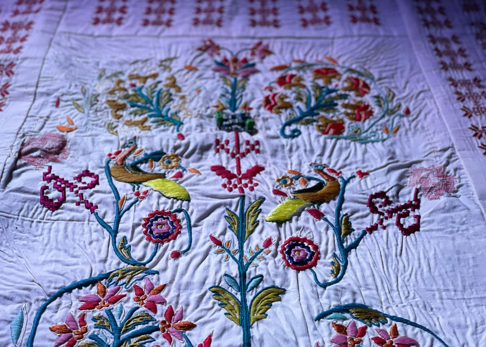

Listening Patterns
Close ×
Electronic Textiles and Digital Sound
This textile work responds to the ongoing genocide in Palestine by centering land as an embodied condition.
The work draws from the structure of prayer rugs, to imagine a secure land. The design interweaves Persian garden as a spatial symbol of refuge and care with tatreez motifs, assembling a speculative terrain shaped by memory and displacement.
Embedded within the textile are rosette-shaped tatreez speakers that emit environmental sounds from Palestine uploaded on Radio Aporee.